Astrouant
top
Definition
Terminology
Space travel milestones
Training
Top
An astronaut (from the Ancient Greek ἄστρον (astron), meaning 'star', and ναύτης (nautes), meaning 'sailor') is a person trained, equipped, and deployed by a human spaceflight program to serve as a commander or crew member aboard a spacecraft. Although generally reserved for professional space travelers, the term is sometimes applied to anyone who travels into space, including scientists, politicians, journalists, and tourists.[1][2] "Astronaut" technically applies to all human space travelers regardless of nationality. However, astronauts fielded by Russia or the Soviet Union are typically known instead as cosmonauts (from the Russian "kosmos" (космос), meaning "space", also borrowed from Greek κόσμος).[3] Comparatively recent developments in crewed spaceflight made by China have led to the rise of the term taikonaut (from the Mandarin "tàikōng" (太空), meaning "space"), although its use is somewhat informal and its origin is unclear. In China, the People's Liberation Army Astronaut Corps astronauts and their foreign counterparts are all officially called hángtiānyuán (航天员, meaning "heaven navigator" or literally "heaven-sailing staff"). Since 1961, 600 astronauts have flown in space.[4] Until 2002, astronauts were sponsored and trained exclusively by governments, either by the military or by civilian space agencies. With the suborbital flight of the privately funded SpaceShipOne in 2004, a new category of astronaut was created: the commercial astronaut.
Definition
The criteria for what constitutes human spaceflight vary, with some focus on the point where the atmosphere becomes so thin that centrifugal force, rather than aerodynamic force, carries a significant portion of the weight of the flight object. The Fédération Aéronautique Internationale (FAI) Sporting Code for astronautics recognizes only flights that exceed the Kármán line, at an altitude of 100 kilometers (62 mi).[5] In the United States, professional, military, and commercial astronauts who travel above an altitude of 80 kilometres (50 mi)[6] are awarded astronaut wings. As of 17 November 2016, 552 people from 36 countries have reached 100 km (62 mi) or more in altitude, of whom 549 reached low Earth orbit or beyond.[7] Of these, 24 people have traveled beyond low Earth orbit, either to lunar orbit, the lunar surface, or, in one case, a loop around the Moon.[note 1] Three of the 24—Jim Lovell, John Young and Eugene Cernan—did so twice.[8] As of 17 November 2016, under the U.S. definition, 558 people qualify as having reached space, above 50 miles (80 km) altitude. Of eight X-15 pilots who exceeded 50 miles (80 km) in altitude, only one, Joseph A. Walker, exceeded 100 kilometers (about 62.1 miles) and he did it two times, becoming the first person in space twice.[7] Space travelers have spent over 41,790 man-days (114.5 man-years) in space, including over 100 astronaut-days of spacewalks.[9][10] As of 2016, the man with the longest cumulative time in space is Gennady Padalka, who has spent 879 days in space.[11] Peggy A. Whitson holds the record for the most time in space by a woman, at 675 days.[12]
Terminology
In 1959, when both the United States and Soviet Union were planning, but had yet to launch humans into space, NASA Administrator T. Keith Glennan and his Deputy Administrator, Hugh Dryden, discussed whether spacecraft crew members should be called astronauts or cosmonauts. Dryden preferred "cosmonaut", on the grounds that flights would occur in and to the broader cosmos, while the "astro" prefix suggested flight specifically to the stars.[13] Most NASA Space Task Group members preferred "astronaut", which survived by common usage as the preferred American term. [14] When the Soviet Union launched the first man into space, Yuri Gagarin in 1961, they chose a term which anglicizes to "cosmonaut
Astrouant
A professional space traveler is called an astronaut.[17] The first known use of the term "astronaut" in the modern sense was by Neil R. Jones in his 1930 short story "The Death's Head Meteor". The word itself had been known earlier; for example, in Percy Greg's 1880 book Across the Zodiac, "astronaut" referred to a spacecraft. In Les Navigateurs de l'infini (1925) by J.-H. Rosny aîné, the word astronautique (astronautics) was used. The word may have been inspired by "aeronaut", an older term for an air traveler first applied in 1784 to balloonists. An early use of "astronaut" in a non-fiction publication is Eric Frank Russell's poem "The Astronaut", appearing in the November 1934 Bulletin of the British Interplanetary Society.[18] The first known formal use of the term astronautics in the scientific community was the establishment of the annual International Astronautical Congress in 1950, and the subsequent founding of the International Astronautical Federation the following year. [19]NASA applies the term astronaut to any crew member aboard NASA spacecraft bound for Earth orbit or beyond. NASA also uses the term as a title for those selected to join its Astronaut Corps.[20] The European Space Agency similarly uses the term astronaut for members of its Astronaut Corps
cosmonaut
By convention, an astronaut employed by the Russian Federal Space Agency (or its predecessor, the Soviet space program) is called a cosmonaut in English texts.[20] The word is an Anglicization of kosmonavt (Russian: космонавт Russian pronunciation: [kəsmɐˈnaft]).[22] Other countries of the former Eastern Bloc use variations of the Russian kosmonavt, such as the Polish: kosmonauta (although Poles also used astronauta, and the two words are considered synonyms).[23] Coinage of the term космонавт has been credited to Soviet aeronautics (or "cosmonautics") pioneer Mikhail Tikhonravov (1900–1974).[15][16] The first cosmonaut was Soviet Air Force pilot Yuri Gagarin, also the first person in space. He was part of the first six Soviet citizens, with German Titov, Yevgeny Khrunov, Andriyan Nikolayev, Pavel Popovich, and Grigoriy Nelyubov, who were given the title of pilot-cosmonaut in January 1961. [24] Valentina Tereshkova was the first female cosmonaut and the first and youngest woman to have flown in space with a solo mission on the Vostok 6 in 1963.[25] On 14 March 1995,[26] Norman Thagard became the first American to ride to space on board a Russian launch vehicle, and thus became the first "American cosmonaut".[27][28]
Tailkonaut
In Chinese, the term Yǔ háng yuán (宇航员, "cosmos navigating personnel") is used for astronauts and cosmonauts in general,[29][30] while hángtiān yuán (航天员, "navigating celestial-heaven personnel") is used for Chinese astronauts. Here, hángtiān (航天, literally "heaven-navigating", or spaceflight) is strictly[31] defined as the navigation of outer space within the local star system, i.e. Solar System. The phrase tàikōng rén (太空人, "spaceman") is often used in Hong Kong and Taiwan.[32] The term taikonaut is used by some English-language news media organizations for professional space travelers from China.[33] The word has featured in the Longman and Oxford English dictionaries, and the term became more common in 2003 when China sent its first astronaut Yang Liwei into space aboard the Shenzhou 5 spacecraft.[34] This is the term used by Xinhua News Agency in the English version of the Chinese People's Daily since the advent of the Chinese space program.[35] The origin of the term is unclear; as early as May 1998, Chiew Lee Yih (趙裡昱) from Malaysia, used it in newsgroups.[36][37]
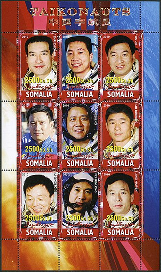Parastronaut
For its 2022 Astronaut Group, the European Space Agency envisioned recruiting an astronaut with a physical disability, a category they called "parastronauts", with the intention but not guarantee of spaceflight. [38] The categories of disability considered for the program were individuals with lower limb deficiency (either through amputation or congenital), leg length difference, or a short stature (less than 130 centimetres or 4 feet 3 inches). [39] On 23 November 2022, John McFall was selected to be the first ESA parastronaut.
other items
With the rise of space tourism, NASA and the Russian Federal Space Agency agreed to use the term "spaceflight participant" to distinguish those space travelers from professional astronauts on missions coordinated by those two agencies. Finnish American astronaut Timothy Kopra While no nation other than Russia (and previously the Soviet Union), the United States, and China have launched a crewed spacecraft, several other nations have sent people into space in cooperation with one of these countries, e.g. the Soviet-led Interkosmos program. Inspired partly by these missions, other synonyms for astronaut have entered occasional English usage. For example, the term spationaut (French: spationaute) is sometimes used to describe French space travelers, from the Latin word spatium for "space"; the Malay term angkasawan (deriving from angkasa meaning 'space') was used to describe participants in the Angkasawan program (note its similarity with the Indonesian term antariksawan). Plans of the Indian Space Research Organisation to launch its crewed Gaganyaan spacecraft have spurred at times public discussion if another term than astronaut should be used for the crew members, suggesting vyomanaut (from the Sanskrit word vyoman meaning 'sky' or 'space') or gagannaut (from the Sanskrit word gagan for 'sky').[41][42] In Finland, the NASA astronaut Timothy Kopra, a Finnish American, has sometimes been referred to as sisunautti, from the Finnish word sisu.[43] Across Germanic languages, the word for "astronaut" typically translates to "space traveler", as it does with German's Raumfahrer, Dutch's ruimtevaarder, Swedish's rymdfarare, and Norwegian's romfarer. one who flies in a vehicle above 50 miles (80 km) for NASA or the military is considered an astronaut (with no qualifier) one who flies in a vehicle to the International Space Station in a mission coordinated by NASA and Roscosmos is a spaceflight participant one who flies above 50 miles (80 km) in a non-NASA vehicle as a crewmember and demonstrates activities during flight that are essential to public safety, or contribute to human space flight safety, is considered a commercial astronaut by the Federal Aviation Administration[44] one who flies to the International Space Station as part of a "privately funded, dedicated commercial spaceflight on a commercial launch vehicle dedicated to the mission ... to conduct approved commercial and marketing activities on the space station (or in a commercial segment attached to the station)" is considered a private astronaut by NASA[45] (as of 2020, nobody has yet qualified for this status) a generally-accepted but unofficial term for a paying non-crew passenger who flies a private non-NASA or military vehicles above 50 miles (80 km) is a space tourist (as of 2020[needs update], nobody has yet qualified for this status) On July 20, 2021, the FAA issued an order redefining the eligibility criteria to be an astronaut in response to the private suborbital spaceflights of Jeff Bezos and Richard Branson.[46][47] The new criteria states that one must have "[d]emonstrated activities during flight that were essential to public safety, or contributed to human space flight safety" in order to qualify as an astronaut. This new definition excludes Bezos and Branson.
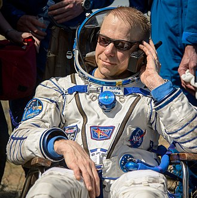Space travel milestones
The first human in space was Soviet Yuri Gagarin, who was launched on 12 April 1961, aboard Vostok 1 and orbited around the Earth for 108 minutes. The first woman in space was Soviet Valentina Tereshkova, who launched on 16 June 1963, aboard Vostok 6 and orbited Earth for almost three days. Alan Shepard became the first American and second person in space on 5 May 1961, on a 15-minute sub-orbital flight aboard Freedom 7. The first American to orbit the Earth was John Glenn, aboard Friendship 7 on 20 February 1962. The first American woman in space was Sally Ride, during Space Shuttle Challenger's mission STS-7, on 18 June 1983.[48] In 1992, Mae Jemison became the first African American woman to travel in space aboard STS-47. Cosmonaut Alexei Leonov was the first person to conduct an extravehicular activity (EVA), (commonly called a "spacewalk"), on 18 March 1965, on the Soviet Union's Voskhod 2 mission. This was followed two and a half months later by astronaut Ed White who made the first American EVA on NASA's Gemini 4 mission.[49] The first crewed mission to orbit the Moon, Apollo 8, included American William Anders who was born in Hong Kong, making him the first Asian-born astronaut in 1968.
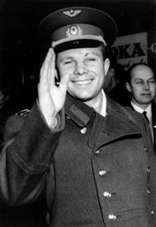The Soviet Union, through its Intercosmos program, allowed people from other "socialist" (i.e. Warsaw Pact and other Soviet-allied) countries to fly on its missions, with the notable exceptions of France and Austria participating in Soyuz TM-7 and Soyuz TM-13, respectively. An example is Czechoslovak Vladimír Remek, the first cosmonaut from a country other than the Soviet Union or the United States, who flew to space in 1978 on a Soyuz-U rocket. [50] Rakesh Sharma became the first Indian citizen to travel to space. He was launched aboard Soyuz T-11, on 2 April 1984. On 23 July 1980, Pham Tuan of Vietnam became the first Asian in space when he flew aboard Soyuz 37.[51] Also in 1980, Cuban Arnaldo Tamayo Méndez became the first person of Hispanic and black African descent to fly in space, and in 1983, Guion Bluford became the first African American to fly into space. In April 1985, Taylor Wang became the first ethnic Chinese person in space.[52][53] The first person born in Africa to fly in space was Patrick Baudry (France), in 1985.[54][55] In 1985, Saudi Arabian Prince Sultan Bin Salman Bin AbdulAziz Al-Saud became the first Arab Muslim astronaut in space. [56] In 1988, Abdul Ahad Mohmand became the first Afghan to reach space, spending nine days aboard the Mir space station.[57]
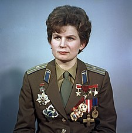With the increase of seats on the Space Shuttle, the U.S. began taking international astronauts. In 1983, Ulf Merbold of West Germany became the first non-US citizen to fly in a US spacecraft. In 1984, Marc Garneau became the first of eight Canadian astronauts to fly in space (through 2010).[58] In 1985, Rodolfo Neri Vela became the first Mexican-born person in space.[59] In 1991, Helen Sharman became the first Briton to fly in space.[60] In 2002, Mark Shuttleworth became the first citizen of an African country to fly in space, as a paying spaceflight participant.[61] In 2003, Ilan Ramon became the first Israeli to fly in space, although he died during a re-entry accident. On 15 October 2003, Yang Liwei became China's first astronaut on the Shenzhou 5 spacecraft. On 30 May 2020, Doug Hurley and Bob Behnken became the first astronauts to launch on a private crewed spacecraft, Crew Dragon.
Age milestones
The youngest person to reach space is Oliver Daemen, who was 18 years and 11 months old when he made a suborbital spaceflight on Blue Origin NS-16. [62] Daemen, who was a commercial passenger aboard the New Shepard, broke the record of Soviet cosmonaut Gherman Titov, who was 25 years old when he flew Vostok 2. Titov remains the youngest human to reach orbit; he rounded the planet 17 times. Titov was also the first person to suffer space sickness and the first person to sleep in space, twice.[63][64] The oldest person to reach space is William Shatner, who was 90 years old when he made a suborbital spaceflight on Blue Origin NS-18. [65] The oldest person to reach orbit is John Glenn, one of the Mercury 7, who was 77 when he flew on STS-95
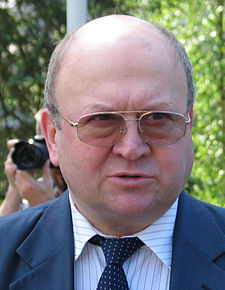Duration and distance milestones
The longest time spent in space was by Russian Valeri Polyakov, who spent 438 days there. [9] As of 2006, the most spaceflights by an individual astronaut is seven, a record held by both Jerry L. Ross and Franklin Chang-Diaz. The farthest distance from Earth an astronaut has traveled was 401,056 km (249,205 mi), when Jim Lovell, Jack Swigert, and Fred Haise went around the Moon during the Apollo 13 emergency.[9]
civilian and non-government milestones
Civilian and non-government milestones The first civilian in space was Valentina Tereshkova[67] aboard Vostok 6 (she also became the first woman in space on that mission). Tereshkova was only honorarily inducted into the USSR's Air Force, which did not accept female pilots at that time. A month later, Joseph Albert Walker became the first American civilian in space when his X-15 Flight 90 crossed the 100 kilometers (54 nautical miles) line, qualifying him by the international definition of spaceflight.[68][69] Walker had joined the US Army Air Force but was not a member during his flight. The first people in space who had never been a member of any country's armed forces were both Konstantin Feoktistov and Boris Yegorov aboard Voskhod 1. The first non-governmental space traveler was Byron K. Lichtenberg, a researcher from the Massachusetts Institute of Technology who flew on STS-9 in 1983.[70] In December 1990, Toyohiro Akiyama became the first paying space traveler and the first journalist in space for Tokyo Broadcasting System, a visit to Mir as part of an estimated $12 million (USD) deal with a Japanese TV station, although at the time, the term used to refer to Akiyama was "Research Cosmonaut".[71][72][73] Akiyama suffered severe space sickness during his mission, which affected his productivity.[72] The first self-funded space tourist was Dennis Tito on board the Russian spacecraft Soyuz TM-3 on 28 April 2001.
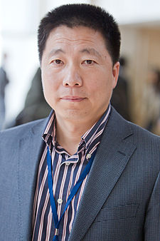Self-funded travelers
Further information: Space tourism The first person to fly on an entirely privately funded mission was Mike Melvill, piloting SpaceShipOne flight 15P on a suborbital journey, although he was a test pilot employed by Scaled Composites and not an actual paying space tourist.[74][75] Jared Isaacman was the first person to self-fund a mission to orbit, commanding Inspiration4 in 2021.[76] Nine others have paid Space Adventures to fly to the International Space Station: Dennis Tito (American): 28 April – 6 May 2001 Mark Shuttleworth (South African): 25 April – 5 May 2002 Gregory Olsen (American): 1–11 October 2005 Anousheh Ansari (Iranian / American): 18–29 September 2006 Charles Simonyi (Hungarian / American): 7–21 April 2007, 26 March – 8 April 2009 Richard Garriott (British / American): 12–24 October 2008 Guy Laliberté (Canadian): 30 September 2009 – 11 October 2009 Yusaku Maezawa and Yozo Hirano (both Japanese): 8 – 24 December 2021
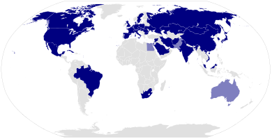Training
The first NASA astronauts were selected for training in 1959.[77] Early in the space program, military jet test piloting and engineering training were often cited as prerequisites for selection as an astronaut at NASA, although neither John Glenn nor Scott Carpenter (of the Mercury Seven) had any university degree, in engineering or any other discipline at the time of their selection. Selection was initially limited to military pilots.[78][79] The earliest astronauts for both the US and the USSR tended to be jet fighter pilots, and were often test pilots. Once selected, NASA astronauts go through twenty months of training in a variety of areas, including training for extravehicular activity in a facility such as NASA's Neutral Buoyancy Laboratory.[1][78] Astronauts-in-training (astronaut candidates) may also experience short periods of weightlessness (microgravity) in an aircraft called the "Vomit Comet," the nickname given to a pair of modified KC-135s (retired in 2000 and 2004, respectively, and replaced in 2005 with a C-9) which perform parabolic flights.[77] Astronauts are also required to accumulate a number of flight hours in high-performance jet aircraft. This is mostly done in T-38 jet aircraft out of Ellington Field, due to its proximity to the Johnson Space Center. Ellington Field is also where the Shuttle Training Aircraft is maintained and developed, although most flights of the aircraft are conducted from Edwards Air Force Base. Astronauts in training must learn how to control and fly the Space Shuttle; further, it is vital that they are familiar with the International Space Station so they know what they must do when they get there.[80]
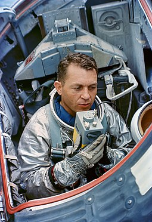NASA candidacy requirements
NASA candidacy requirements Unless otherwise noted, the following data are incorporated from the Astronaut Requirements article by NASA The candidate must be a citizen of the United States. The candidate must complete a master's degree in a STEM field, including engineering, biological science, physical science, computer science or mathematics. The candidate must have at least two years of related professional experience obtained after degree completion or at least 1,000 hours pilot-in-command time on jet aircraft. The candidate must be able to pass the NASA long-duration flight astronaut physical. The candidate must also have skills in leadership, teamwork and communications. The master's degree requirement can also be met by: Two years of work toward a doctoral program in a related science, technology, engineering or math field. A completed Doctor of Medicine or Doctor of Osteopathic Medicine degree. Completion of a nationally recognized test pilot school program.
Mission specialist Educator
Mission Specialist Educator Main article: Educator Astronaut Project Applicants must have a bachelor's degree with teaching experience, including work at the kindergarten through twelfth grade level. An advanced degree, such as a master's degree or a doctoral degree, is not required, but is strongly desired.[81] Mission Specialist Educators, or "Educator Astronauts", were first selected in 2004; as of 2007, there are three NASA Educator astronauts: Joseph M. Acaba, Richard R. Arnold, and Dorothy Metcalf-Lindenburger.[82][83] Barbara Morgan, selected as back-up teacher to Christa McAuliffe in 1985, is considered to be the first Educator astronaut by the media, but she trained as a mission specialist. [84] The Educator Astronaut program is a successor to the Teacher in Space program from the 1980s.[85][86]
Health risks of space travel
Astronauts are susceptible to a variety of health risks including decompression sickness, barotrauma, immunodeficiencies, loss of bone and muscle, loss of eyesight, orthostatic intolerance, sleep disturbances, and radiation injury.[87][88][89][90][91][92][93][94][95][96] A variety of large scale medical studies are being conducted in space via the National Space Biomedical Research Institute (NSBRI) to address these issues. Prominent among these is the Advanced Diagnostic Ultrasound in Microgravity Study in which astronauts (including former ISS commanders Leroy Chiao and Gennady Padalka) perform ultrasound scans under the guidance of remote experts to diagnose and potentially treat hundreds of medical conditions in space. This study's techniques are now being applied to cover professional and Olympic sports injuries as well as ultrasound performed by non-expert operators in medical and high school students. It is anticipated that remote guided ultrasound will have application on Earth in emergency and rural care situations, where access to a trained physician is often rare.[97][98][99] A 2006 Space Shuttle experiment found that Salmonella typhimurium, a bacterium that can cause food poisoning, became more virulent when cultivated in space.[100] More recently, in 2017, bacteria were found to be more resistant to antibiotics and to thrive in the near-weightlessness of space.[101] Microorganisms have been observed to survive the vacuum of outer space.[102][103] On 31 December 2012, a NASA-supported study reported that human spaceflight may harm the brain and accelerate the onset of Alzheimer's disease.[104][105][106] In October 2015, the NASA Office of Inspector General issued a health hazards report related to space exploration, including a human mission to Mars.[107][108] Over the last decade, flight surgeons and scientists at NASA have seen a pattern of vision problems in astronauts on long-duration space missions. The syndrome, known as visual impairment intracranial pressure (VIIP), has been reported in nearly two-thirds of space explorers after long periods spent aboard the International Space Station (ISS).[109] On 2 November 2017, scientists reported that significant changes in the position and structure of the brain have been found in astronauts who have taken trips in space, based on MRI studies. Astronauts who took longer space trips were associated with greater brain changes.[110][111] Being in space can be physiologically deconditioning on the body. It can affect the otolith organs and adaptive capabilities of the central nervous system. Zero gravity and cosmic rays can cause many implications for astronauts.[112] In October 2018, NASA-funded researchers found that lengthy journeys into outer space, including travel to the planet Mars, may substantially damage the gastrointestinal tissues of astronauts. The studies support earlier work that found such journeys could significantly damage the brains of astronauts, and age them prematurely.[113] Researchers in 2018 reported, after detecting the presence on the International Space Station (ISS) of five Enterobacter bugandensis bacterial strains, none pathogenic to humans, that microorganisms on ISS should be carefully monitored to continue assuring a medically healthy environment for astronauts.[114][115] A study by Russian scientists published in April 2019 stated that astronauts facing space radiation could face temporary hindrance of their memory centers. While this does not affect their intellectual capabilities, it temporarily hinders formation of new cells in brain's memory centers. The study conducted by Moscow Institute of Physics and Technology (MIPT) concluded this after they observed that mice exposed to neutron and gamma radiation did not impact the rodents' intellectual capabilities.[116] A 2020 study conducted on the brains of eight male Russian cosmonauts after they returned from long stays aboard the International Space Station showed that long-duration spaceflight causes many physiological adaptions, including macro- and microstructural changes. While scientists still know little about the effects of spaceflight on brain structure, this study showed that space travel can lead to new motor skills (dexterity), but also slightly weaker vision, both of which could possibly be long lasting. It was the first study to provide clear evidence of sensorimotor neuroplasticity, which is the brain's ability to change through growth and reorganization.[117][118]
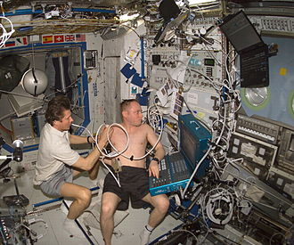Food and drink
An astronaut on the International Space Station requires about 830 g (29 oz) mass of food per meal each day (inclusive of about 120 g or 4.2 oz packaging mass per meal). Space Shuttle astronauts worked with nutritionists to select menus that appealed to their individual tastes. Five months before flight, menus were selected and analyzed for nutritional content by the shuttle dietician. Foods are tested to see how they will react in a reduced gravity environment. Caloric requirements are determined using a basal energy expenditure (BEE) formula. On Earth, the average American uses about 35 US gallons (130 L) of water every day. On board the ISS astronauts limit water use to only about three US gallons (11 L) per day.[120]
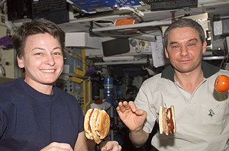insignia
In Russia, cosmonauts are awarded Pilot-Cosmonaut of the Russian Federation upon completion of their missions, often accompanied with the award of Hero of the Russian Federation. This follows the practice established in the USSR where cosmonauts were usually awarded the title Hero of the Soviet Union. At NASA, those who complete astronaut candidate training receive a silver lapel pin. Once they have flown in space, they receive a gold pin. U.S. astronauts who also have active-duty military status receive a special qualification badge, known as the Astronaut Badge, after participation on a spaceflight. The United States Air Force also presents an Astronaut Badge to its pilots who exceed 50 miles (80 km) in altitude.
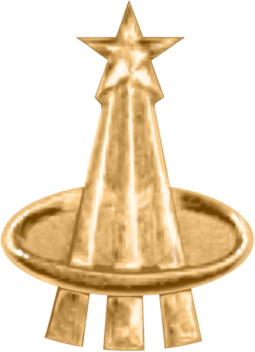deaths
For a more comprehensive list, see List of spaceflight-related accidents and incidents § Astronaut fatalities. Space Mirror Memorial As of 2020, eighteen astronauts (fourteen men and four women) have died during four space flights. By nationality, thirteen were American, four were Russian (Soviet Union), and one was Israeli. As of 2020, eleven people (all men) have died training for spaceflight: eight Americans and three Russians. Six of these were in crashes of training jet aircraft, one drowned during water recovery training, and four were due to fires in pure oxygen environments. Astronaut David Scott left a memorial consisting of a statuette titled Fallen Astronaut on the surface of the Moon during his 1971 Apollo 15 mission, along with a list of the names of eight of the astronauts and six cosmonauts known at the time to have died in service.[121] The Space Mirror Memorial, which stands on the grounds of the Kennedy Space Center Visitor Complex, is maintained by the Astronauts Memorial Foundation and commemorates the lives of the men and women who have died during spaceflight and during training in the space programs of the United States. In addition to twenty NASA career astronauts, the memorial includes the names of an X-15 test pilot, a U.S. Air Force officer who died while training for a then-classified military space program, and a civilian spaceflight participant.